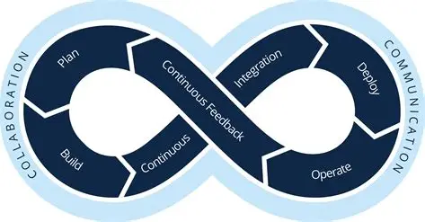

Com o avanço das tecnologias digitais e a crescente necessidade de entregas rápidas e confiáveis de software, surgiu o DevOps, uma abordagem que integra as equipes de desenvolvimento e operações. O DevOps busca melhorar a colaboração, automatizar processos e garantir maior qualidade e agilidade no ciclo de vida do software. Este trabalho tem como objetivo apresentar os principais conceitos, práticas, ferramentas, benefícios e exemplos práticos relacionados ao DevOps.
DevOps é um composto de Dev (desenvolvimento) e Ops (operações), o DevOps é a união de pessoas, processos e tecnologias para fornecer continuamente valor aos clientes. O DevOps permite que funções anteriormente isoladas (desenvolvimento, operações de TI, engenharia da qualidade e segurança) atuem de forma coordenada e colaborativa para gerar produtos melhores e mais confiáveis. Ao adotar uma cultura de DevOps em conjunto com as práticas e ferramentas de DevOps, as equipes ganham a capacidade de responder melhor às necessidades dos clientes, aumentar a confiança nos aplicativos que constroem e cumprir as metas empresariais mais rapidamente.
A infraestrutura passa a ser definida e gerenciada por meio de código, garantindo padronização, versionamento e reprodutibilidade dos ambientes.
Acompanhamento contínuo do desempenho das aplicações e registros de eventos, permitindo rápida identificação e correção de falhas.
O DevOps representa uma mudança significativa na forma como o software é desenvolvido e operado. Ao integrar pessoas, processos e tecnologias, essa abordagem possibilita entregas mais rápidas, seguras e confiáveis. Assim, o DevOps se torna essencial para organizações que buscam competitividade, inovação e eficiência no desenvolvimento de sistemas.
- AMAZON WEB SERVICES. Amazon Web Services – DevOps Overview. Disponível em: aws.amazon.com/devops. Acesso em:
23 fev. 2026.
- DOCKER INC. Docker – Documentation. Disponível em: docs.docker.com. Acesso em: 23 fev. 2026.
- EBAC ONLINE. DevOps: o que é, ferramentas, benefícios e habilidades necessárias para se tornar um
especialista. Disponível em: ebaconline.com.br/blog/devops-o-que-e-ferramentas-beneficios-habilidades
(ebaconline.com.br in Bing). Acesso em: 23 fev. 2026.
- MICROSOFT. O que é o DevOps? Disponível em:
azure.microsoft.com/pt-br/resources/cloud-computing-dictionary/what-is-devops (azure.microsoft.com in Bing).
Acesso em: 23 fev. 2026.
- PRESSMAN, Roger S.; MAXIM, Bruce R. Engenharia de Software: Uma Abordagem Profissional. 8ª ed. Porto Alegre:
AMGH, 2016.
- ROCKETSEAT. O que é DevOps? Um guia completo para iniciantes. Disponível em:
rocketseat.com.br/blog/artigos/post/o-que-e-devops-guia-para-iniciantes (rocketseat.com.br in Bing). Acesso em:
23 fev. 2026.